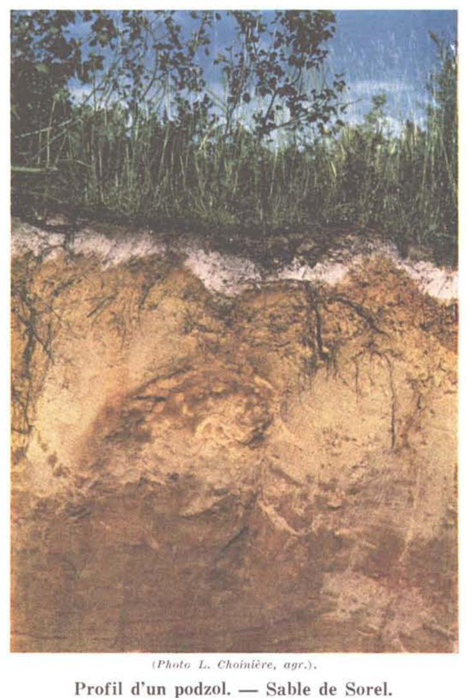
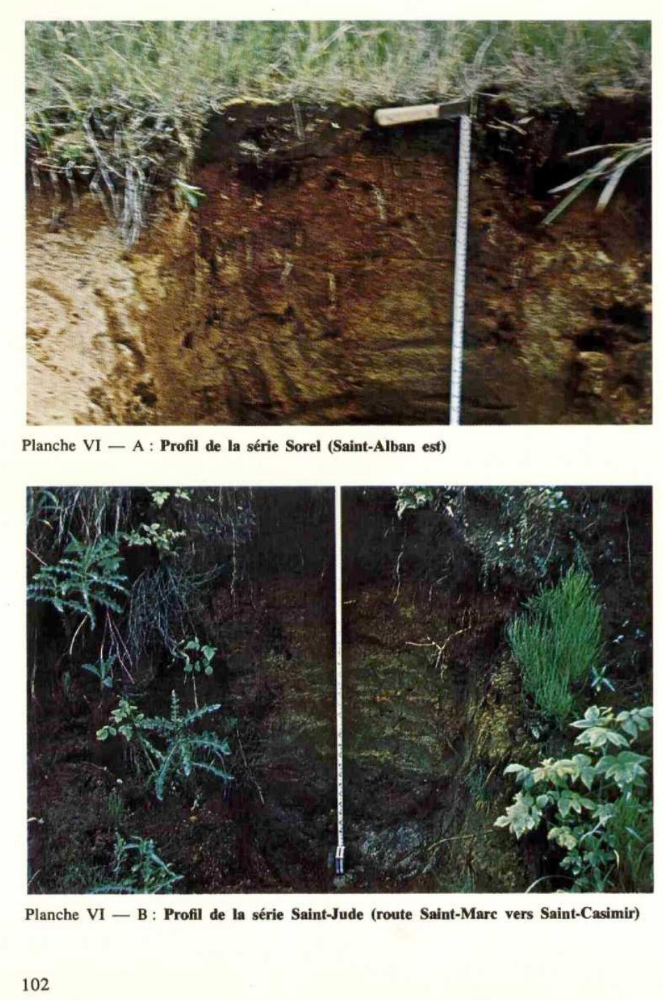
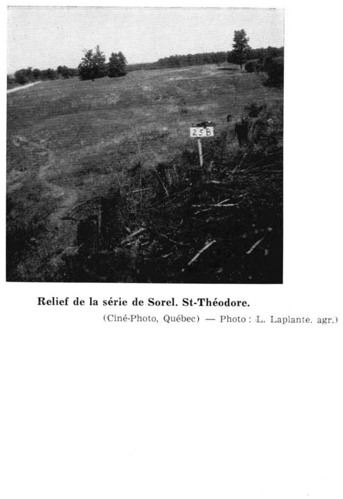

Identification & Caractéristiques Générales
Le matériau parental de la série de Sorel est constitué d'une épaisse accumulation de sables meubles, d'une profondeur variant généralement de 1,2 à 2,4 mètres, composés principalement de quartz et de feldspaths. Ces sables reposent en discontinuité sur un substrat argileux plat. Sur le plan géomorphologique, cette série se manifeste dans des paysages de plaines sableuses aux formes variables, caractérisées par des secteurs plus ou moins vallonnés, des coteaux à pentes abruptes ainsi que des modelés dunaires lorsque la couverture végétale est absente. Le profil topographique montre typiquement que les sols de la série de Sorel occupent la position convexe des crêtes et des ondulations du terrain, constituant le membre bien drainé de la catena locale en association avec des séries de texture plus fine ou de position topographique concave.
Sur le plan morphologique, le profil pédologique présente les caractéristiques d'un podzol fort avancé, favorisé par la pauvreté en bases du matériau, l'absence initiale de colloïdes et un climat humide. Le sol se caractérise par une texture sableuse très grossière à fine, atteignant ou dépassant 90 % de sable, et une pierrosité nulle. La grande porosité des horizons meubles, combinée à la position topographique surélevée, confère au sol un drainage interne et externe excessif. Le profil se distingue en outre par la présence fréquente, bien que discontinue et couvrant environ le tiers de la superficie, d'un horizon cimenté d'ortstein. La réaction du sol est fortement acide, traduisant une lixiviation prononcée des bases échangeables.
Les aptitudes agronomiques de la série de Sorel sont sévèrement limitées par sa texture grossière, l'absence de colloïdes minéraux et organiques actifs, ainsi que par un déficit hydrique chronique inhérent au drainage excessif. La fertilité naturelle globale est très faible, marquée par une carence prononcée en calcium et en matière organique, ce qui restreint considérablement le potentiel pour les grandes cultures intensives. En raison de la divagation éolienne sur les terrains dénudés et de la faible cohésion des particules, l'utilisation agricole est marginale et ces sols portent souvent des boisés résineux ou mixtes, ou demeurent en friches. Les interventions correctives requises pour toute mise en valeur agricole incluent des apports massifs et répétés de amendements calciques et magnésiens, des fumures organiques régulières pour accroître la capacité d'échange cationique, ainsi qu'un contrôle rigoureux du travail du sol afin de prévenir l'érosion éolienne.
Classification Taxonomique & Environnement Pédologique
| Ordre Pédologique | Podzolique |
|---|---|
| Grand Groupe (SCSS) | Podzol humo-ferrique |
| Sous-Groupe Taxonomique | Podzol humo-ferrique orthique |
| Famille Pédologique | Sableuse, mixte sableux, acide |
| Mode de Dépôt Parental | Marin |
| Classe de Drainage Naturel | Très rapidement drainé |
| Régime Thermique & Humidité | Frais / Subaride |
Description Morphologique du Profil Type
Séquences génétiques des horizons pédologiques caractérisant le profil type représentatif de la série Sorel :
Profil naturel (vierge) — Comté de Châteauguay
✓ Source : Comté de Châteauguay — Page 67Couleur Munsell : Non précisée
Structure & Consistance : Polyédrique à granulaire
Description morphologique : Litière de feuilles mortes
Couleur Munsell : Non précisée
Structure & Consistance : Polyédrique à granulaire
Description morphologique : Sable humifère peu mélanisé, brun foncé pH : 5.3 – 5.8.
Couleur Munsell : Non précisée
Structure & Consistance : Polyédrique à granulaire
Description morphologique : Sable gris cendré; pH : 5.2 – 5.9.
Couleur Munsell : Non précisée
Structure & Consistance : Polyédrique à granulaire
Description morphologique : Sable jaune foncé à brun — rouge foncé avec accumulation d'humus; pH: 5.5 — 6.0.
Couleur Munsell : Non précisée
Structure & Consistance : Polyédrique à granulaire
Description morphologique : Sable jaune-brun à brun ocreux cimenté localement en un "Ortstein" ferrugineux; pH: 5.8 — 6.1.
Couleur Munsell : Non précisée
Structure & Consistance : Polyédrique à granulaire
Description morphologique : Sable de coloration jaune pâle . pH: 5.8 — 6.3.
Couleur Munsell : Non précisée
Structure & Consistance : Polyédrique à granulaire
Description morphologique : Roche-mère: Sable gris à jaune très pâle, meuble et très perméable. pH: 6.0 – 6.4.
Profil représentatif — Comté de Drummond
✓ Source : Comté de Drummond — Page 105Couleur Munsell : Non précisée
Structure & Consistance : Polyédrique à granulaire
Description morphologique : Absent.
Couleur Munsell : 10YR 6/3
Structure & Consistance : Polyédrique à granulaire
Description morphologique : Sable humifère, brun pâle (10 YR 6/3); sans structure, ni consistance. La réaction (pH 5.5) est fortement acide.
Couleur Munsell : 10YR 7/2
Structure & Consistance : Polyédrique à granulaire
Description morphologique : Sable, gris clair (10 YR 7/2); sans structure, ni consistance. Cette couche grise se présente souvent sous forme de poches ou d'entonnoirs, à une profondeur variant de 8 à 15 pouces. La réaction (pH 5.9) est moyennement acide.
Couleur Munsell : 5YR 4/4
Structure & Consistance : Polyédrique à granulaire
Description morphologique : Sable, brun rouge (5 YR 4/4); sans structure, ni consistance. La réaction (pH 5.2) est fortement acide.
Couleur Munsell : 10YR 6/6, 5YR 5/6, 7YR 3/3
Structure & Consistance : Polyédrique à granulaire
Description morphologique : Sable, jaune brun (10 YR 6/6) avec des taches rouge jaune (5 YR 5/6); l'épaisseur du profil est très variable descendant sous forme de langues brun rouge foncé (7 YR 3/3); sans structure; consistance variant de légèrement cimentée à très compacte, formant des "ortstein" ferrugineux. La réaction (pH 5.8) est moyennement acide.
Couleur Munsell : 10YR 7/6
Structure & Consistance : Polyédrique à granulaire
Description morphologique : Sable, jaune (10 YR 7/6); sans structure, ni consistance. La réaction (pH 5.6) est moyennement acide.
Couleur Munsell : 5Y 7/3, 5Y 6/3
Structure & Consistance : Polyédrique à granulaire
Description morphologique : Sable, jaune pâle (5 Y 7/3) avec teintes olive pâle (5 Y 6/3); stratifié et ouvert. La réaction (pH 6.1) est faiblement acide.
Profil représentatif — Comté de Drummond
✓ Source : Comté de Drummond — Page 108Couleur Munsell : Non précisée
Structure & Consistance : Polyédrique à granulaire
Description morphologique : Absent.
Couleur Munsell : 10YR 2/2
Structure & Consistance : Polyédrique à granulaire
Description morphologique : Sable humifère, brun très foncé (10 YR 2/2); sans structure, ni consistance. La réaction (pH 5.0) est très fortement acide.
Couleur Munsell : 5YR 8/1
Structure & Consistance : Polyédrique à granulaire
Description morphologique : Sable, blanc (5 YR 8/1); sans structure, ni consistance. La réaction (pH 5.0) est très fortement acide.
Couleur Munsell : 7.5YR 5/6
Structure & Consistance : Polyédrique à granulaire
Description morphologique : Sable, brun vif (7.5 YR 5/6); sans structure, ni consistance. La réaction (pH 5.4) est fortement acide.
Couleur Munsell : 7.5YR 5/6 (matrice), 5YR 4/4 (marbrures)
Structure & Consistance : Polyédrique à granulaire
Description morphologique : Sable, brun vif (7.5 YR 5/6); mouchetures brun rouge (5 YR 4/4); sans structure, consistance légèrement cimentée avec présence occasionnelle d'ortstein. La réaction (pH 5.8) est moyennement acide.
Couleur Munsell : 2.5Y 7/2, 2.5Y 6/6
Structure & Consistance : Polyédrique à granulaire
Description morphologique : Sable, gris clair (2.5 Y 7/2); avec des couches horizontales jaune olive (2.5 Y 6/6); sans structure, légèrement tassé. La réaction (pH 6.0) est moyennement acide.
Couleur Munsell : 5Y 5/4
Structure & Consistance : Polyédrique à granulaire
Description morphologique : Sable, olive (5 Y 5/4); sans structure, légèrement tassé. La réaction (pH 6.1) est faiblement acide.
Profil forestier / boisé — Comté de L'assomption
✓ Source : Comté de L'assomption — Page 53Couleur Munsell : Non précisée
Structure & Consistance : Polyédrique à granulaire
Description morphologique : Humus brut, noir avec quelques grains de sable blanc; très friable et très perméable; pH 4,5 à 5,0.
Couleur Munsell : 5YR 6/2, 7.5YR 7/2
Structure & Consistance : Polyédrique à granulaire
Description morphologique : Sable à sable loameux gris rosâtre (5YR 6/2-7.5YR 7/2); très perméable; pH 5,0 à 5,5.
Couleur Munsell : 7.5YR 6/6
Structure & Consistance : Polyédrique à granulaire
Description morphologique : Sable à sable loameux brun rougeâtre foncé avec taches circulaires de jaune rougeâtre (7.5YR 6/6) — le matériau brun est dominant dans la partie supérieure de l'horizon, mais le jaune est parfois dominant dans la partie inférieure —; consistance très dure; particules cimentées les unes aux autres (ortstein); pH 5.0 à 5,8.
Couleur Munsell : 10YR 6/8
Structure & Consistance : Monogranulaire
Description morphologique : Sable jaune brunâtre (10YR 6/8-6/6); couleur quelque peu variable; structure monogranulaire; très perméable; pH 5,0 à 6,0.
Couleur Munsell : 2.5Y 6/4
Structure & Consistance : Monogranulaire
Description morphologique : Sable fin jaunâtre pâle à olive pâle (2.5Y 6/4-5/4); couches horizontales de sédimentation; friable; structure monogranulaire; pH 5.8 à 6,4.
Couleur Munsell : 5Y 5/3
Structure & Consistance : Polyédrique à granulaire
Description morphologique : Sable fin olive à olive pâle (5Y 5/3-6/3); très friable et très perméable; pH 6,5 à 6,7.
Profil représentatif — Comté de Lévis
✓ Source : Comté de Lévis — Page 56Couleur Munsell : 10YR 4/3
Structure & Consistance : Polyédrique à granulaire
Description morphologique : Sable brun (10YR 4/3). Plus humifère à l'état vierge; pH: 5.7.
Couleur Munsell : Non précisée
Structure & Consistance : Polyédrique à granulaire
Description morphologique : Sable gris cendré. Absent ou en poches, irrégulier.
Couleur Munsell : 5YR 4/6
Structure & Consistance : Particulaire
Description morphologique : Sable jaune foncé à brun rouge foncé (5YR 4/6) avec accumulation d'humus. Structure particulaire; pH: 5.1.
Couleur Munsell : Non précisée
Structure & Consistance : Polyédrique à granulaire
Description morphologique : Sable jaune brun à brun ocreux cimenté localement en un ortstein ferrugineux; pH: 5.3.
Couleur Munsell : 10YR 6/6
Structure & Consistance : Polyédrique à granulaire
Description morphologique : Sable jaune brunâtre (10YR 6/6), sans structure; pH: 5.9.
Couleur Munsell : 10YR 6/4
Structure & Consistance : Polyédrique à granulaire
Description morphologique : Sable brun jaune clair (10YR 6/4), sans structure; pH: 6.0.
Couleur Munsell : 10YR 6/2
Structure & Consistance : Polyédrique à granulaire
Description morphologique : Sable gris brun clair (10YR 6/2), meuble et très perméable; pH: 6.0.
Profil représentatif — Comté de Lotbinière
✓ Source : Comté de Lotbinière — Page 48Couleur Munsell : Non précisée
Structure & Consistance : Polyédrique à granulaire
Description morphologique : Litière de feuilles mortes.
Couleur Munsell : Non précisée
Structure & Consistance : Polyédrique à granulaire
Description morphologique : Sable humifère, brun foncé, généralement absent, pH: 5.0-5.5.
Couleur Munsell : Non précisée
Structure & Consistance : Polyédrique à granulaire
Description morphologique : Sable gris cendré, sans structure; pH: 5.0-5.3.
Couleur Munsell : Non précisée
Structure & Consistance : Polyédrique à granulaire
Description morphologique : Sable jaune foncé à brun rouge foncé avec accumulation d'humus; pH: 5.3.
Couleur Munsell : Non précisée
Structure & Consistance : Polyédrique à granulaire
Description morphologique : Sable jaune brun à brun ocreux cimenté localement en un "ortstein" ferrugineux; pH: 5.0-5.3.
Couleur Munsell : Non précisée
Structure & Consistance : Polyédrique à granulaire
Description morphologique : Sable jaune pâle, sans structure, pH: 5.6-6.0.
Couleur Munsell : Non précisée
Structure & Consistance : Polyédrique à granulaire
Description morphologique : Roche-mère: sable gris à jaune très pâle, meuble et très perméable; pH: 6.0-6.2.
Profil représentatif — Comté de Nicolet
✓ Source : Comté de Nicolet — Page 73Couleur Munsell : Non précisée
Structure & Consistance : Polyédrique à granulaire
Description morphologique : Litière de feuilles mortes.
Couleur Munsell : Non précisée
Structure & Consistance : Polyédrique à granulaire
Description morphologique : Sable humifère, brun foncé; pH 5.3-6.0.
Couleur Munsell : Non précisée
Structure & Consistance : Polyédrique à granulaire
Description morphologique : Sable, gris cendré; pH 5.8-6.0.
Couleur Munsell : Non précisée
Structure & Consistance : Polyédrique à granulaire
Description morphologique : Sable, jaune foncé à brun noirâtre avec accumulation d'humus; pH 6.0-6.3.
Couleur Munsell : Non précisée
Structure & Consistance : Polyédrique à granulaire
Description morphologique : Sable, jaune brunâtre à brun ocreux avec ortstein; pH 6.0-6.3.
Couleur Munsell : Non précisée
Structure & Consistance : Polyédrique à granulaire
Description morphologique : Sable, jaune chamois; pH 6.0-6.3.
Couleur Munsell : Non précisée
Structure & Consistance : Polyédrique à granulaire
Description morphologique : Sable, gris à jaune faible; pH 6.0-6.4.
Profil cultivé (agricole) — Comté de Portneuf
✓ Source : Comté de Portneuf — Page 59Couleur Munsell : 10YR 3/2, 10YR 5/2
Structure & Consistance : Polyédrique à granulaire
Description morphologique : Sable grossier loameux à sable grossier brun-gris très foncé (10YR 3/2 h), brun-gris (10YR 5/2 s) ; particulaire, fine ; très friable ; racines abondantes, fines à microscopiques, non-orientées, exo-agrégats ; limite abrupte, régulière ; pH : 5.6.
Couleur Munsell : 10YR 6/1
Structure & Consistance : Polyédrique à granulaire
Description morphologique : Sable grossier gris (10YR 6/1 h, 10YR 6/1 s) ; particulaire, fine ; meuble ; horizon occasionnellement enrichi par des cendres ; limite abrupte, interrompue ; pH : 5.0.
Couleur Munsell : 5YR 4/8, 2.5Y 6/4, 2.5YR 2/2
Structure & Consistance : Polyédrique à granulaire
Description morphologique : Sable grossier rouge-jaune (5YR 4/8 h), brun-jaune clair (2.5Y 6/4 s) ; particulaire, fine ; meuble ; racines peu abondantes, fines à microscopiques, verticales, exo-agrégats ; présence occasionnelle de concrétions (ortstein) rouge très sombre (2.5YR 2/2 h) abondantes, irrégulières, grossières, dispersées dans la matrice ; limite graduelle, ondulée ; pH : 5.2.
Couleur Munsell : 10YR 6/8, 2.5Y 6/4
Structure & Consistance : Polyédrique à granulaire
Description morphologique : Sable grossier jaune-brun (10YR 6/8 h), brun-jaune clair (2.5Y 6/4 s) ; particulaire, fine ; meuble ; racines très peu abondantes, très fines et microscopiques, verticales, exo-agrégats ; limite abrupte, ondulée ; pH : 5.5.
Couleur Munsell : 10YR 7/6, 10YR 6/3
Structure & Consistance : Polyédrique à granulaire
Description morphologique : Sable jaune (10YR 7/6 h), brun pâle (10YR 6/3 s) ; particulaire, fine ; meuble ; présence de micas noirs ; pH : 5.3.
Profil représentatif — Comté de Bagot
✓ Source : Comté de Bagot — Page 79Couleur Munsell : Non précisée
Structure & Consistance : Polyédrique à granulaire
Description morphologique : Litière de feuilles mortes (humus mor).
Couleur Munsell : Non précisée
Structure & Consistance : Polyédrique à granulaire
Description morphologique : Sable humifère peu mélanisé, brun foncé. pH: 5.3 — 5.8.
Couleur Munsell : Non précisée
Structure & Consistance : Polyédrique à granulaire
Description morphologique : Sable gris cendré (bleicherde). pH: 5.2 — 5.9.
Couleur Munsell : 5YR 4/6
Structure & Consistance : Particulaire ou très finement grenue faiblement développée
Description morphologique : Sable jaune foncé à brun rouge foncé (5YR 4/6) à l'état humide avec accumulation d'humus, à structure particulaire ou très finement grenue faiblement développée. pH: 5.5 — 6.0.
Couleur Munsell : 7.5YR 5/6
Structure & Consistance : Particulaire
Description morphologique : Sable, jaune brun à rouge jaunâtre (7.5YR 5/6) à l'état humide, à structure particulaire, cimenté localement en un “Ortstein” ferrugineux. pH: 5.8 — 6.1.
Couleur Munsell : 10YR 6/6, 10YR 6/4
Structure & Consistance : Particulaire
Description morphologique : Sable, jaune brunâtre (10YR 6/6) à l'état humide, passant, en profondeur, au brun jaune clair (10YR 6/4) à l'état humide, à structure particulaire. pH: 5.8 — 6.3.
Couleur Munsell : 10YR 6/4
Structure & Consistance : Polyédrique à granulaire
Description morphologique : Sable, gris brun clair (10YR 6/4 — 6/2) à brun et plus jaune clair, meuble et très perméable; pH: 6.0 — 6.5. Roche-mère surtout quartzeuse mais accompagnée de feldspaths, de ferromagnésiens et de faible quantité de magnétite. pH: 6.0 — 6.5.
Profil représentatif — Comté de Trois-rivières
✓ Source : Comté de Trois-rivières — Page 31Couleur Munsell : 7.5YR 4/2
Structure & Consistance : Polyédrique à granulaire
Description morphologique : Sable moyen, sans structure, brun foncé (7.5YR 4/2), meuble; pH : 5.3.
Couleur Munsell : 10YR 7/1
Structure & Consistance : Polyédrique à granulaire
Description morphologique : Sable moyen, sans structure, gris clair (10YR 7/1), meuble; pH : 5.1.
Couleur Munsell : 5YR 4/4
Structure & Consistance : Particulaire) avec ortstein de couleur brun rouge (5yr 4/4)
Description morphologique : Sable moyen, (structure particulaire) avec ortstein de couleur brun rouge (5YR 4/4), ferme; pH : 5.5.
Couleur Munsell : 10YR 5/6
Structure & Consistance : Particulaire
Description morphologique : Sable moyen, structure particulaire, brun jaune (10YR 5/6), ferme; pH : 5.8.
Couleur Munsell : 10YR 4/2
Structure & Consistance : Polyédrique à granulaire
Description morphologique : Sable moyen, sans structure, brun gris foncé (10YR 4/2), meu- ble à légèrement ferme; pH : 6.1.
Profil représentatif — Comté de Yamaska
✓ Source : Comté de Yamaska — Page 63Couleur Munsell : Non précisée
Structure & Consistance : Polyédrique à granulaire
Description morphologique : Litière de feuilles mortes.
Couleur Munsell : Non précisée
Structure & Consistance : Polyédrique à granulaire
Description morphologique : Sable humifère, brun foncé; pH : 5.3-6.0.
Couleur Munsell : Non précisée
Structure & Consistance : Polyédrique à granulaire
Description morphologique : Sable, gris cendré; pH : 5.8-6.0.
Couleur Munsell : Non précisée
Structure & Consistance : Polyédrique à granulaire
Description morphologique : Sable, jaune foncé à brun noirâtre avec accumulation d'humus; pH : 6.0-6.3.
Couleur Munsell : Non précisée
Structure & Consistance : Polyédrique à granulaire
Description morphologique : Sable, jaune brunâtre à brun ocreux avec ortstein; pH : 6.0-6.3.
Couleur Munsell : Non précisée
Structure & Consistance : Polyédrique à granulaire
Description morphologique : Sable, jaune chamois; pH : 6.0-6.3.
Couleur Munsell : Non précisée
Structure & Consistance : Polyédrique à granulaire
Description morphologique : Sable, gris à jaune faible; pH : 6.0-6.4.
Profil représentatif — Comté de Huntingdon
✓ Source : Comté de Huntingdon — Page 144Couleur Munsell : Non précisée
Structure & Consistance : Polyédrique à granulaire
Description morphologique : Litière de feuilles mortes (humus mor). Sable humifère peu mélanisé, brun foncé. pH: 5.3 — 5.8.
Couleur Munsell : Non précisée
Structure & Consistance : Polyédrique à granulaire
Description morphologique : Sable gris cendré (bleicherde). pH: 5.2 — 5.9.
Couleur Munsell : 5YR 4/6
Structure & Consistance : Particulaire ou très finement grenue faiblement développée
Description morphologique : Sable jaune foncé à brun rouge foncé (5YR 4/6) à l'état humide avec accumulation d'humus, à structure particulaire ou très finement grenue faiblement développée. pH: 5.5 — 6.0.
Couleur Munsell : 7.5YR 5/6
Structure & Consistance : Particulaire
Description morphologique : Sable, jaune brun à rouge jaunâtre (7.5YR 5/6) à l'état humide, à structure particulaire, cimenté localement en un "Ortstein" ferrugineux. pH: 5.8 — 6.1.
Couleur Munsell : 10YR 6/6, 10YR 6/4
Structure & Consistance : Particulaire
Description morphologique : Sable, jaune brunâtre (10YR 6/6) à l'état humide, passant, en profondeur, au brun jaune clair (10YR 6/4) à l'état humide, à structure particulaire. pH: 5.8 — 6.8.
Couleur Munsell : 10YR 6/4
Structure & Consistance : Polyédrique à granulaire
Description morphologique : Sable, gris brun clair (10YR 6/4 — 6/2) à brun jaune clair, meuble et très perméable; pH: 6.0 — 6.5. Roche-mère surtout quartzeuse mais accompagnée de feldpaths, de ferromagnésiens et de faible quantité de magnétite. pH: 6.0 — 6.5.
Profils Photographiques & Planches de Terrain
Documents iconographiques, figures pédologiques et coupes de terrain documentées dans les mémoires d'inventaire pour de la série Sorel :





Propriétés Physico-Chimiques & Analyses de Laboratoire
| Horizon | Prof. (pces/cm) | Sable % | Limon % | Argile % | pH | C % | N % | Ca éch. | Mg éch. | K éch. | H+ éch. | Bases tot. | C.E.C. (meq/100g) | Saturation % | ||||
|---|---|---|---|---|---|---|---|---|---|---|---|---|---|---|---|---|---|---|
| 0 à 1 | A₀ | 0 | 89 | 0 | 5 | 29 | 49 | 6 | 8 | 3 | 0.7 | 2.1 | 2.8 | 1.64 | 0.08 | 20.5 | 5.5 | 3,200 |
| 1 à 4 | A₂ | 0 | 89 | 0 | 3 | 29 | 49 | 8 | 8 | 3 | 0.2 | — | 0.8 | 0.46 | 0.01 | 46.0 | 5.9 | 0 |
| 4 à 7 | B₂₁ | 0 | 90 | 0 | 3 | 39 | 43 | 5 | 7 | 3 | 2.7 | 6.7 | 5.3 | 3.12 | 0.09 | 34.6 | 5.2 | 16,500 |
| 7 à 18 | B₂₂ | 0 | 96 | 0 | 10 | 47 | 38 | 1 | 2 | 2 | 0.7 | 1.1 | 1.3 | 0.77 | 0.02 | 38.5 | 5.8 | 1,000 |
| 18 à 30 | B₂₃ | 1 | 95 | 0 | 15 | 47 | 32 | 1 | 2 | 3 | 0.3 | 0.5 | 0.6 | 0.33 | 0.02 | 16.5 | 5.6 | 200 |
| 30 et plus | C | 0 | 96 | 0 | 5 | 40 | 49 | 2 | 2 | 2 | 0.2 | 0.0 | 0.7 | 0.39 | 0.01 | 39.0 | 6.1 | 500 |
Particularités Régionales, Phases & Variantes Pédologiques
Déclinaisons régionales, faciès texturaux, phases d'érosion ou de pierrosité et variantes cartographiées par étude pour de la série Sorel :
| Étude Régionale | Symbole | Appellation / Phase / Variante | Différenciation avec la série type (Analyse pédologique) |
|---|---|---|---|
| Comté de Chambly | SB3 |
Saint-Blaise loam | Modalité modale de référence (type de base de la série). |
SB3h |
Saint-Blaise loam humifère | Phase humifère enrichie en matière organique superficielle. | |
SB4 |
Saint-Blaise loam limono-argileux | Faciès argileux plus lourd et compact que le loam de référence. | |
SB4b |
Saint-Blaise loam limono-argileux 3-8 % de pente | Faciès argileux plus lourd et compact que le loam de référence. | |
SB4m |
Saint-Blaise loam limono-argileux mince | Phase mince sur substrat rocheux (< 50 cm); Faciès argileux plus lourd et compact que le loam de référence. | |
SB4p |
Saint-Blaise loam argileux pierreux | Phase pierreuse (abondance de cailloux et blocs en surface); Faciès argileux plus lourd et compact que le loam de référence. | |
SB5 |
Saint-Blaise argile limoneuse | Faciès argileux plus lourd et compact que le loam de référence. | |
SBa3 |
Saint-Blaise variante non calcaire loam | Variante décarbonatée (non calcaire) à réaction plus acide. | |
SBa4 |
Saint-Blaise variante non calcaire loam limono-argileux | Variante décarbonatée (non calcaire) à réaction plus acide; Faciès argileux plus lourd et compact que le loam de référence. | |
| Comté de Châteauguay | B |
Saint-Blaise loam argileux | Faciès argileux plus lourd et compact que le loam de référence. |
S |
Sorel sable avec dunes | Faciès sableux très filtrant et pauvre en éléments nutritifs vis-à-vis du loam de référence; Drainage très rapidement drainé (distinct du drainage de référence mal drainé); Sous-groupe podzol humo-ferrique orthique (sans caractères gleyifiés marqués). | |
| Comté de Iberville | SB |
Saint-Blaise argileux sur till loameux fin alcalin | Phase peu profonde sur till; Faciès argileux plus lourd et compact que le loam de référence. |
| Comté de Laprairie | SB3 |
Saint-Blaise loam | Conforme à la série type de référence (caractéristiques texturales et drainage identiques). |
SB3h |
Saint-Blaise loam humifère | Phase humifère enrichie en matière organique superficielle. | |
SB3p |
Saint-Blaise loam légèrement à modérément pierreux | Phase légèrement à modérément pierreuse (obstruction mécanique modérée). | |
SB4 |
Saint-Blaise loam limono-argileux | Faciès argileux plus lourd et compact que le loam de référence. | |
SB4p |
Saint-Blaise loam argileux légèrement à modérément pierreux | Phase légèrement à modérément pierreuse (obstruction mécanique modérée); Faciès argileux plus lourd et compact que le loam de référence. | |
SB5 |
Saint-Blaise argile limoneuse | Faciès argileux plus lourd et compact que le loam de référence. | |
| Les sols de l’Île de Montréal | Bl |
Saint-Blaise loam | Conforme à la série type de référence (caractéristiques texturales et drainage identiques). |
Bl-a |
Saint-Blaise argile mince | Phase mince sur substrat rocheux (< 50 cm); Faciès argileux plus lourd et compact que le loam de référence. | |
| Comté de Napierville | SB |
Saint-Blaise | Conforme à la série type de référence (caractéristiques texturales et drainage identiques). |
SBh |
Saint-Blaise humifère | Phase humifère enrichie en matière organique superficielle. | |
| Comté de Rouville | SB3 |
Saint-Blaise loam | Conforme à la série type de référence (caractéristiques texturales et drainage identiques). |
SB4 |
Saint-Blaise loam limono-argileux | Faciès argileux plus lourd et compact que le loam de référence. | |
SB4p |
Saint-Blaise loam limono-argileux légèrement à modérément pierreux | Phase légèrement à modérément pierreuse (obstruction mécanique modérée); Faciès argileux plus lourd et compact que le loam de référence. | |
| Comté de Saint-jean | SB |
Saint-Blaise loam | Conforme à la série type de référence (caractéristiques texturales et drainage identiques). |
SBbp |
Saint-Blaise loam 3-8% de pente légèrement à modérément pierreux | Phase légèrement à modérément pierreuse (obstruction mécanique modérée). | |
| Comté de Verchères | SB4 |
Saint-Blaise loam limono-argileux | Faciès argileux plus lourd et compact que le loam de référence. |
SB5 |
Saint-Blaise argile limoneuse | Faciès argileux plus lourd et compact que le loam de référence. | |
SB5m |
Saint-Blaise argile limoneuse mince | Phase mince sur substrat rocheux (< 50 cm); Faciès argileux plus lourd et compact que le loam de référence. | |
| Comté de Bagot | S |
Sorel sable | Faciès sableux très filtrant et pauvre en éléments nutritifs vis-à-vis du loam de référence; Drainage très rapidement drainé (distinct du drainage de référence mal drainé); Sous-groupe podzol humo-ferrique orthique (sans caractères gleyifiés marqués). |
| Comté de Huntingdon | S |
Sorel sable | Faciès sableux très filtrant et pauvre en éléments nutritifs vis-à-vis du loam de référence; Drainage très rapidement drainé (distinct du drainage de référence mal drainé); Sous-groupe podzol humo-ferrique orthique (sans caractères gleyifiés marqués). |
| Comté de Berthier | S |
Sorel sable | Faciès sableux très filtrant et pauvre en éléments nutritifs vis-à-vis du loam de référence; Drainage très rapidement drainé (distinct du drainage de référence mal drainé); Sous-groupe podzol humo-ferrique orthique (sans caractères gleyifiés marqués). |
| Comté de Drummond | S |
Sorel sable | Faciès sableux très filtrant et pauvre en éléments nutritifs vis-à-vis du loam de référence; Drainage très rapidement drainé (distinct du drainage de référence mal drainé); Sous-groupe podzol humo-ferrique orthique (sans caractères gleyifiés marqués). |
| Comté de L'assomption | Sr |
Sorel sable | Faciès sableux très filtrant et pauvre en éléments nutritifs vis-à-vis du loam de référence; Drainage très rapidement drainé (distinct du drainage de référence mal drainé); Sous-groupe podzol humo-ferrique orthique (sans caractères gleyifiés marqués). |
| Comté de Lévis | S |
Sorel sable fin | Faciès sableux très filtrant et pauvre en éléments nutritifs vis-à-vis du loam de référence; Drainage très rapidement drainé (distinct du drainage de référence mal drainé); Sous-groupe podzol humo-ferrique orthique (sans caractères gleyifiés marqués). |
| Comté de Lotbinière | S |
Sorel sable fin | Faciès sableux très filtrant et pauvre en éléments nutritifs vis-à-vis du loam de référence; Drainage très rapidement drainé (distinct du drainage de référence mal drainé); Sous-groupe podzol humo-ferrique orthique (sans caractères gleyifiés marqués). |
| Comté de Maskinongé | S |
Sorel sable | Faciès sableux très filtrant et pauvre en éléments nutritifs vis-à-vis du loam de référence; Drainage très rapidement drainé (distinct du drainage de référence mal drainé); Sous-groupe podzol humo-ferrique orthique (sans caractères gleyifiés marqués). |
| Comté de Nicolet | S |
Sorel sable | Faciès sableux très filtrant et pauvre en éléments nutritifs vis-à-vis du loam de référence; Drainage très rapidement drainé (distinct du drainage de référence mal drainé); Sous-groupe podzol humo-ferrique orthique (sans caractères gleyifiés marqués). |
Sg |
Sorel sable grossier | Faciès sableux très filtrant et pauvre en éléments nutritifs vis-à-vis du loam de référence; Drainage très rapidement drainé (distinct du drainage de référence mal drainé); Sous-groupe podzol humo-ferrique orthique (sans caractères gleyifiés marqués). | |
| Comté de Portneuf | S |
Sorel sable grossier loameux à sable grossier | Faciès sableux très filtrant et pauvre en éléments nutritifs vis-à-vis du loam de référence; Drainage très rapidement drainé (distinct du drainage de référence mal drainé); Sous-groupe podzol humo-ferrique orthique (sans caractères gleyifiés marqués). |
| Comté de Trois-rivières | S |
Sorel sable moyen | Faciès sableux très filtrant et pauvre en éléments nutritifs vis-à-vis du loam de référence; Drainage très rapidement drainé (distinct du drainage de référence mal drainé); Sous-groupe podzol humo-ferrique orthique (sans caractères gleyifiés marqués). |
| Comté de Yamaska | S |
Sorel sable | Faciès sableux très filtrant et pauvre en éléments nutritifs vis-à-vis du loam de référence; Drainage très rapidement drainé (distinct du drainage de référence mal drainé); Sous-groupe podzol humo-ferrique orthique (sans caractères gleyifiés marqués). |
Distribution Pédo-Paysagère & Représentativité Cartographique (Couverture PPS 2026)
- Complexe Saint-Amable sable à sable limoneux fin (SBL) — co-occurrente dans 43 polygone(s)
- Saint-Jude sable fin (SJU) — co-occurrente dans 24 polygone(s)
- Botreaux sable limoneux à loam sableux (BUX) — co-occurrente dans 20 polygone(s)
Aptitudes Agronomiques, Hydropédologie & Conservation des Sols
Indicateurs Hydropédologiques & Vulnérabilité à l'Érosion (BDHP 2026)
Interprétation BDHP : Potentiel de ruissellement faible. Sols à infiltration rapide (sables profonds, graviers bien drainés).
Classement selon l'Inventaire des Terres du Canada (ITC / CLI) : Classe 3w.
- Potentiel agricole : Terroir adapté aux cultures régionales selon la texture dominante et la régie de drainage.
- Contraintes majeures : Très rapidement drainé. Risque d'engorgement temporaire ou d'excès d'eau printanier.
- Gestion & Aménagement : Drainage souterrain ou superficiel préconisé sur les terres planes. Chaulage et apport organique régulier selon les bilans agronomiques.
- Cultures adaptées : Grandes cultures (maïs, soya, céréales), prairies fourragères et cultures maraîchères selon le contexte géomorphologique.